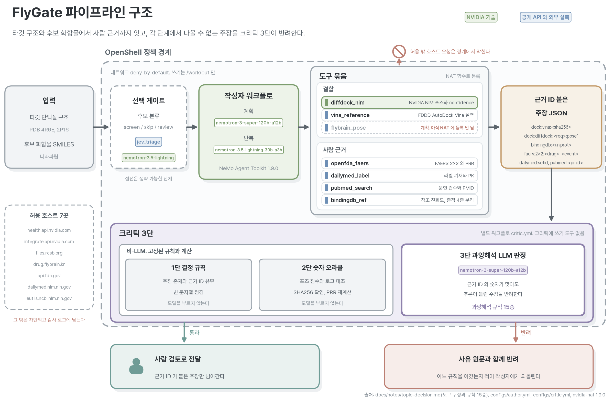
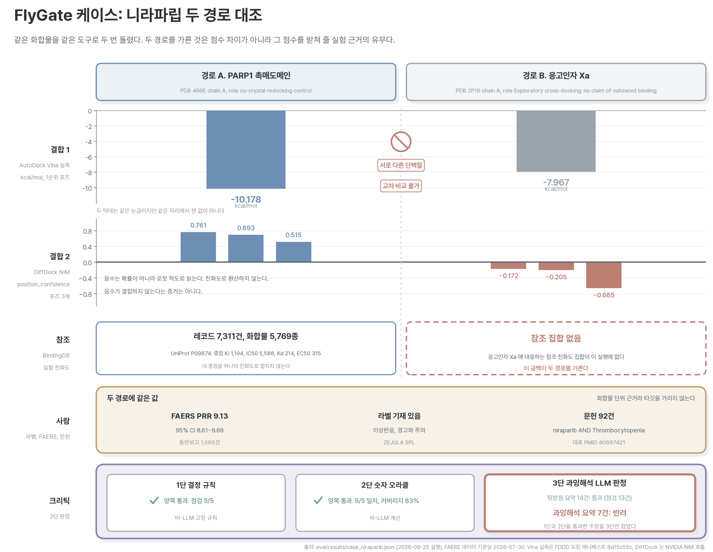

도킹 점수에서 나올 수 없는 주장을 잡는 신약 후보 검증 에이전트
이 문서의 수치는 모두 저장소의 결과 파일에서 읽어 만들었다. 항목마다 출처 파일을 함께 적는다. 확인하지 못한 것은 확인하지 못했다고 적는다.
신약 후보를 계산으로 거를 때 도킹 점수를 씁니다. 그런데 이 점수에는 도구 문서가 직접 밝힌 해석 한계가 있습니다. 서로 다른 단백질에서 나온 점수는 견줄 수 없고, 딥러닝 도킹이 내는 신뢰도 값은 결합 세기가 아니며, 교차 도킹 결과는 결합의 증거가 아닙니다. LLM 에이전트를 이런 도구에 붙이면 그 선을 자주 넘습니다. 근거도 제대로 붙고 숫자도 로그와 맞는데 결론만 틀린 요약이 나옵니다. 형식을 보는 검사로는 걸러 낼 수 없고, 놓치면 없는 선택성이나 없는 결합이 보고서에 남습니다. FDA와 EMA는 올해 1월 안전성 모니터링까지 포함한 AI 활용 원칙을 공동으로 냈습니다.
FlyGate는 후보물질 하나를 구조에서 사람까지 이어 검증하는 에이전트입니다. 타깃 단백질과 후보를 받아 NVIDIA DiffDock과 AutoDock Vina 실측 두 경로로 결합을 보고, 실험 친화도를 참조한 뒤, 그 후보가 사람에게서 어땠는지를 허가 라벨과 이상사례 보고와 문헌으로 확인합니다. 모든 주장에 근거 ID가 붙습니다. 크리틱이 세 단계로 검증합니다. 1단은 근거 ID 유무를 보고, 2단은 숫자를 원본 로그와 대조하며, 3단은 도구 문서가 금지한 추론을 했는지 판정합니다. 규칙 열다섯 가지는 도구 제공자와 데이터 제공자가 문서에 적은 경고에서 그대로 옮겼습니다. 평가 서른세 건에서 과잉해석 열여섯 건을 3단이 모두 반려했고, 거짓 양성은 없었습니다. 같은 케이스를 고정 규칙만으로 돌리면 한 건만 걸립니다. 그 차이가 의미 판단이 하는 일입니다. 모든 실행은 OpenShell 정책 안에서 허용 호스트 일곱 곳만 열고 돕니다.

| 단 | 무엇을 보는가 | 모델을 쓰는가 |
|---|---|---|
| 1단 결정 규칙 | 주장 존재, 근거 ID 유무, 빈 문자열 | 쓰지 않는다 |
| 2단 숫자 오라클 | 점수가 원본 로그와 맞는지, SHA256 대조, 지표 재계산 | 쓰지 않는다 |
| 3단 과잉해석 판정 | 근거와 숫자가 맞아도 추론이 한계를 넘었는지 | 여기서만 쓴다 |
같은 케이스로 근거가 받쳐 주는 요약과 과잉해석 7건을 심은 요약을 나란히 돌렸다. 1단과 2단은 양쪽을 통과시켰고 3단만 갈랐다.
| 단 | 근거가 받쳐 주는 요약 | 과잉해석 7건을 심은 요약 |
|---|---|---|
| 1단 결정 규칙 | 근거 ID 규칙 통과 = 예 | 근거 ID 규칙 통과 = 예 |
| 2단 숫자 오라클 | 5/5 일치, 커버리지 83% | 5/5 일치, 커버리지 83% |
| 3단 과잉해석 판정 | pass | reject |
| 최종 판정 | pass | reject |
출처 eval/results/case_niraparib.json. 3단 판정 모델 nvidia/nemotron-3-super-120b-a12b. 과잉해석 규칙은 15종이고 도구 제공자와 데이터 제공자가 문서에 적은 경고에서 옮겼다.
모든 값을 결과 파일에서 읽었다. 출처 파일을 함께 적는다.
| 항목 | 값 | 출처 파일 |
|---|---|---|
| 적발률 (LLM 판정 포함) | 16/16, 거짓 양성 0/17, 평균 0.9697 | eval/results/critic_verdict_output_llm.json |
| 적발률 (결정 규칙만) | 1/16, 평균 0.0303 | eval/results/critic_verdict_output_deterministic.json |
| 평가 케이스 | 33건 | eval/cases.jsonl |
| 과잉해석 규칙 | 15종 | src/harness/tools/overclaim_rules.py |
| 오프라인 테스트 | 293개 수집 | pytest --collect-only -q -m "not network" |
| NAT 등록 도구 | 8종. echo_tool, prr_calculator, openfda_faers, dailymed_label, pubmed_search, diffdock_nim, vina_reference, bindingdb_ref | configs/author.yml |
| 에이전트 도구 호출 | 주장 4건 전부 근거 ID 있음. 근거 없는 주장 0건 | eval/results/nat_run_author_flydock.json |
| DiffDock NIM 호출 | HTTP 200, 4.1초, 응답 232,461바이트, 포즈 3개 | eval/results/diffdock_smoke.txt |
| 샌드박스 스모크 | 18건 통과, 실패 0건 | eval/results/openshell_smoke_flydock.txt |
| 케이스 시연 E2E | Niraparib 두 경로, 7단계 수집, 3단 크리틱 통과와 반려 | eval/results/case_niraparib.json |
적발률의 분모는 반려가 정답인 케이스 수이고, 거짓 양성의 분모는 통과가 정답인 케이스 수다. 두 수치는 같은 평가 케이스를 3단만 끄고 켜서 잰 것이라 나란히 놓아야 뜻이 산다. 결정 규칙만으로 돌린 실행에서 나머지 케이스는 needs_human 으로 남아 사람에게 넘어간다.

| 항목 | 경로 A: PARP1 촉매도메인 (4R6E, chain A) | 경로 B: 응고인자 Xa (2P16, chain A) |
|---|---|---|
| AutoDock Vina 1.2.3 점수 | −10.178 kcal/mol | −7.967 kcal/mol |
| Vina 실행 성격 | co-crystal redocking control | Exploratory cross-docking; no claim of validated binding |
| DiffDock position_confidence | 0.761, 0.693, 0.515 | −0.172, −0.205, −0.665 |
| BindingDB 참조 집합 | 있음. 레코드 7,311건, 화합물 5,769종 (UniProt P09874) | 없음 |
라벨과 FAERS 와 문헌은 화합물 단위 근거라 두 경로에 같은 값이 온다. 어느 타깃에서 결합했는지를 가리지 못한다.
| 항목 | Niraparib 대 혈소판감소증 (Thrombocytopenia) |
|---|---|
| 허가 라벨 (DailyMed SPL) | 기재됨. adverse_reactions, warnings_and_precautions |
| FAERS 불균형 지표 | PRR 9.13 (95% CI 8.61 ~ 9.69), 자료 기준일 2026-07-30 |
| PubMed 문헌 | 92건 |
| 근거의 범위 | 라벨과 FAERS 와 문헌은 화합물 단위 근거다. 이 타깃에서의 결합을 뒷받침하지 않는다. |
두 경로를 가른 것은 점수 차이가 아니라 그 점수를 받쳐 줄 실험 근거의 유무였다. 케이스 브리프는 근거 안의 진술 8항목과 근거 밖의 진술 11항목으로 끝난다. 출처 eval/results/case_niraparib.json (생성 2026-09-25T07:58:04+00:00). 도킹 원본 SHA256 8d15c55c5c25ddd5…
실행은 NVIDIA OpenShell 안에서만 이루어진다. 정책은 deny-by-default 이고 허용 호스트 7곳만 연다. 쓰기는 지정한 출력 폴더만 허용하며 그 밖의 접근은 차단 로그로 남는다.
| 항목 | 값 |
|---|---|
| OpenShell | openshell 0.0.116 |
| 정책 파일 | policies/flydock.yaml |
| 샌드박스 | flydock |
| 유효 정책 해시 | 06d74bdc4800769ed5d7922082fb0685… |
| 허용 호스트 | 7곳. health.api.nvidia.com, integrate.api.nvidia.com, files.rcsb.org, drug.flybrain.kr, api.fda.gov, dailymed.nlm.nih.gov, eutils.ncbi.nlm.nih.gov |
| 쓰기 허용 경로 | /work/out, /tmp, /dev/null |
| 프로세스 신원 | run_as_user=1500 |
| 검증 항목 | 결과 |
|---|---|
| 허용 도메인 (클라이언트: python) | 7건 통과 |
| 허용 목록 밖(차단되어야 함) | 2건 통과 |
| 허용 호스트, 정책에 없는 바이너리(curl) | 1건 통과 |
| 허용 호스트, rules 에 없는 경로 (L7 거부) | 1건 통과 |
| 파일시스템 쓰기 | 4건 통과 |
| 프로세스 신원 (process.run_as_user) | 1건 통과 |
| 파이썬 인증서 검증 (https://health.api.nvidia.com/v1/biology/mit/diffdock) | 2건 통과 |
| 합계 | 18건 통과, 실패 0건 |
허용 목록 밖 호스트, 정책에 없는 바이너리, 정책에 없는 경로가 각각 다른 계층에서 끊긴다. 파일시스템 거부는 커널이 EPERM 으로 끊어 DENIED 줄이 남지 않으므로 Landlock 적용 기록을 함께 싣는다.
[1790324728.479] [sandbox] [OCSF ] [ocsf] NET:OPEN [MED] DENIED /usr/bin/python3.12(137) -> example.com:443 [policy:- engine:opa] [reason:endpoint example.com:443 is not allowed by any policy] [1790324729.584] [sandbox] [OCSF ] [ocsf] NET:OPEN [MED] DENIED /usr/bin/python3.12(150) -> github.com:443 [policy:- engine:opa] [reason:endpoint github.com:443 is not allowed by any policy] [1790324874.976] [sandbox] [OCSF ] [ocsf] NET:OPEN [MED] DENIED /usr/bin/curl(367) -> integrate.api.nvidia.com:443 [policy:- engine:opa] [reason:binary '/usr/bin/curl' not allowed in policy 'nvidia_inference' (ancestors: [/usr/bin/dash -> /usr/bin/dash -> /opt/openshell/bin/openshell-sandbox], cmdline: [/dev/null, /sandbox]). SYMLINK HINT: the binary path is the kernel-resolved target from /proc/<p...] [1790324943.052] [sandbox] [OCSF ] [ocsf] HTTP:GET [MED] DENIED GET http://api.fda.gov:443/drug/label.json [policy:openfda engine:l7] [reason:L7_REQUEST deny GET api.fda.gov:443/drug/label.json reason=GET /drug/label.json not permitted by policy] [1790324948.535] [sandbox] [OCSF ] [ocsf] CONFIG:APPLYING [INFO] Applying Landlock filesystem sandbox [abi:V2 compat:BestEffort ro:12 rw:3]
출처 eval/results/openshell_smoke_flydock.txt. 각 종류의 첫 줄만 뽑았다. 전문은 저장소의 같은 파일에 있다.
NVIDIA Nemotron 3 Super 120B(nvidia/nemotron-3-super-120b-a12b)를 계획과 크리틱 판정에, Nemotron 3.5 Lightning 30B(nvidia/nemotron-3.5-lightning-30b-a3b)를 반복 작업에 씁니다. 두 모델 모두 build.nvidia.com NIM API(OpenAI 호환)로 호출합니다.
NVIDIA DiffDock NIM(health.api.nvidia.com/v1/biology/mit/diffdock)으로 단백질과 리간드의 결합 포즈를 예측합니다. 응답의 신뢰도 값은 포즈 타당성 지표이므로 결합 친화도로 환산하지 않습니다. NVIDIA 문서가 밝힌 한계를 크리틱 규칙에 그대로 넣었습니다.
NVIDIA NeMo Agent Toolkit 1.9.0으로 작성자 워크플로와 크리틱 워크플로를 분리했습니다. 도메인 도구 여덟 종을 NAT 함수로 등록해 에이전트가 직접 호출하고, nat eval로 크리틱 적발률을 측정합니다. 크리틱 워크플로에는 쓰기 도구가 없습니다. NeMo Guardrails 미들웨어로 가드레일 계층을 배선했습니다.
NVIDIA OpenShell 0.0.116으로 실행을 가둡니다. deny-by-default 정책으로 허용 호스트 일곱 곳만 열고, 쓰기는 지정한 출력 폴더만 허용하며, 그 밖의 접근은 차단 로그로 남습니다. 스모크 검증 열여덟 건이 모두 통과했습니다.
build.nvidia.com 스킬 카탈로그의 NVIDIA BioNeMo 에이전트 스킬 문서를 NIM 호출 규격의 참조로 썼습니다.
그 밖에 Python 3.12, 공개 데이터 소스로 openFDA FAERS, DailyMed SPL, PubMed E-utilities, RCSB PDB를 씁니다. 불균형 지표(PRR, ROR, 신뢰구간, 카이제곱)는 모델이 아니라 파이썬이 계산합니다.
되지 않는 것을 되는 것처럼 쓰지 않는다. 이 저장소의 규율이다.
| 항목 | 실제 상태 |
|---|---|
flybrain_pose | 계획. 초파리 커넥톰 포즈 탐색은 아직 도구로 등록하지 않았다 |
jev_triage | 계획. 판정 전용 모델을 싼 분류기로 앞에 두는 구성이다. 호출 규격이 state 와 questions 형태라 어댑터가 필요하다 |
| NemoGuard 판정 모델 | 배선까지 했다. 호스팅 쪽 오류로 시연하지 못했다 |
| 샌드박스 안 DiffDock 호출 | TLS가 닿는 것까지 확인했다. POST는 부르지 않았다 |
| NeMo Retriever 리랭커 | 이 계정 모델 목록 여든두 개에 없어 쓰지 않았다 |
| NemoClaw | 쓰지 않았다. 참조 스택으로 검토만 했다 |
평가 케이스의 정답 라벨은 저자들이 붙였고 도메인 전문가 두 명 이상의 일치도는 아직 없다. build.nvidia.com 이 간헐적으로 503 을 내므로 측정을 다시 돌려야 할 때가 있다.
주제와 초파리 도킹 경로는 팀원 제안이고, 에이전트 하네스와 검증 체계는 선행 프로젝트 PharmaSignal v0 에서 이어 온 자산입니다. 두 갈래를 하나의 파이프라인으로 이었습니다.
| 층 | 내용 | 기여자 | 근거 |
|---|---|---|---|
| 주제와 훅 | 초파리 커넥톰을 신약개발에 붙이는 발상, 화제성 판단 | 팀원 A | 2026-09-25 팀 논의에서 제안 |
| 도킹 자산 | FDDD 데모. 타깃 3종, 화합물 6종, AutoDock Vina 1.2.3 실행 8건, 수용체와 포즈와 로그의 SHA256, BindingDB 참조, DailyMed PK | 팀원 A | drug.flybrain.kr, docs/notes/fddd-and-jev.md |
| 해석 한계 목록 | 하지 말아야 할 해석 8항목. 우리 크리틱 규칙의 뼈대가 됨 | 팀원 A | FDDD multi-target.json 의 notes 배열 |
| Jev 접목 제안 | 판단 전용 모델을 파이프라인에 얹는 구성 | 팀원 A | 공유된 아키텍처 도식을 보고 제안 |
| 약 도메인 검토 | 라벨 읽기, 약 정보 정합, 약사 관점 | 팀원 B | |
| NAT 하네스 | 작성자와 크리틱 분리, 근거 ID 검증 구조, 도메인 중립 코어 약 500줄 | 팀장 | src/harness/ |
| 약물감시 도구 | openFDA FAERS 집계와 불균형 지표, DailyMed 라벨 섹션, PubMed 문헌, ROR 오라클 | 팀장 | src/harness/tools/pharmasignal_*.py |
| 샌드박스 | OpenShell 정책과 차단 로그, provider profile 자격증명 격리 | 팀장 | policies/, eval/results/openshell_smoke*.txt |
| 평가 체계 | nat eval 적발률, 크리틱 판정 평가기 | 팀장 | src/harness/evaluators.py |
| NIM 통합 | 생물학 NIM 접근 확인과 호출 계층, DiffDock 도구 | 팀장 | docs/notes/bionemo-nim.md, eval/results/diffdock_smoke.txt |
| 과잉해석 크리틱 | 규칙 15종과 부정 케이스, 3단 판정 | 팀장 설계, 팀원 A 의 목록을 출처로 | docs/notes/topic-decision.md 규칙 표 |
| 제작 파이프라인 | 영상 9단계, 이중언어 슬라이드, 그림 생성 | 팀장 | assets/, scripts/make_figures.py |
| 자산 | 출처 | 라이선스 |
|---|---|---|
| AutoDock Vina 실행 결과와 준비된 수용체 | Durrant Lab webina, MolModa | 해당 저장소 표기를 따름 |
| 수용체 구조 4R6E, 2P16, 3LN1 | RCSB PDB | 공개 |
| BindingDB 참조 친화도 | BindingDB REST | 해당 사이트 표기를 따름 |
| NVIDIA BioNeMo 에이전트 스킬 문서 | NVIDIA-BioNeMo/bionemo-agent-toolkit | 문서 CC-BY-4.0, 코드 Apache-2.0. 출처 표기 필요 |
| Pretendard 폰트 | orioncactus/pretendard | OFL |
| 초파리 커넥톰 | MaleCNS, FlyWire | 각 배포처 표기를 따름 |
초파리 도킹 자산 FDDD 는 팀원의 별도 저작물이다. 복제하지 않고 도구로 참조하며 데이터 출처와 SHA256 을 그대로 인용한다. 공개 산출물에는 실명을 쓰지 않고 역할로만 적는다. 출처 docs/notes/credits.md.
scripts/make_submission_pdf.py 의 CERT_IMAGE 에 이미지 경로를 넣고 다시 만든다.과정 주소는 https://learn.nvidia.com/courses/course-detail?course_id=course-v1:DLI+S-FX-43+V1 이다. 레슨 1a와 1b를 들었다. 모듈 3과 4는 Brev 인스턴스를 띄워야 진도가 오른다. 원격 진도 기록은 기본으로 꺼져 있으니 도구 모음의 Activity에서 켠다. 수강 안내는 docs/COURSE-GUIDE.md 에 있다. 수료 전이므로 수료 사실을 적지 않는다.